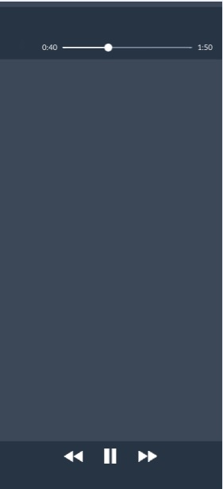

- 
- Limpeza do machucado
1 - agua e sabão 2 - remédio para desinfetar(methiolate, pomadas com antibiótico)
(acabado, se não julgar necessário um remédio para cicatrizar, faça o curativo)
- Remédios para cicatrizar
Nebacetin Kelo-cote Bepantol Neosporin - O curativo